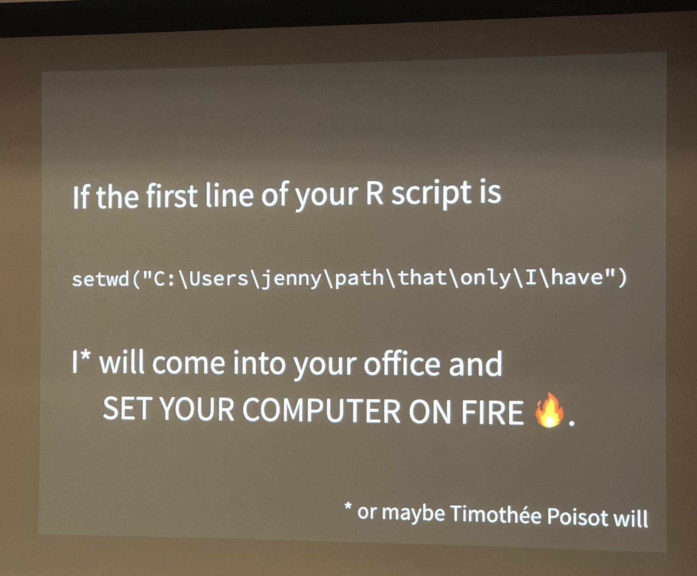
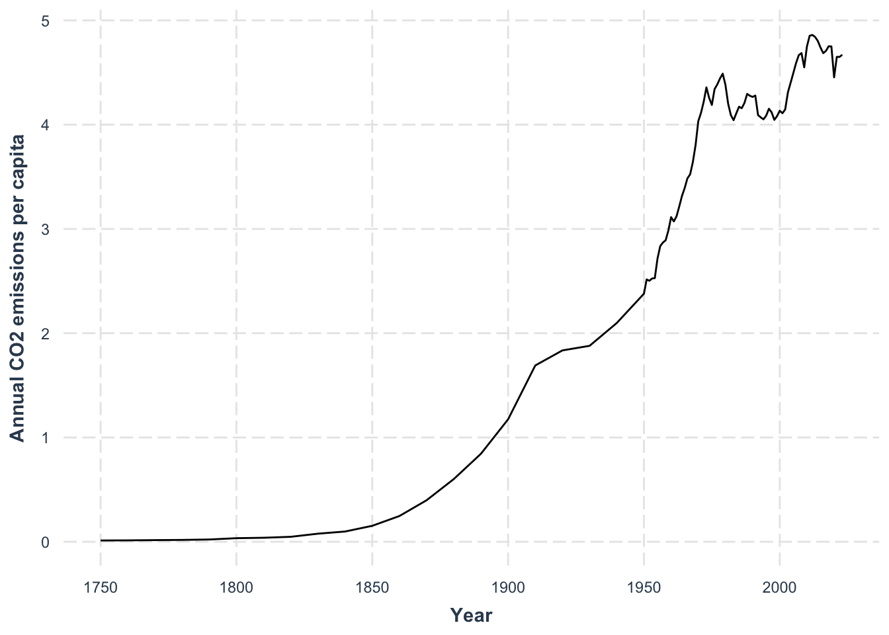
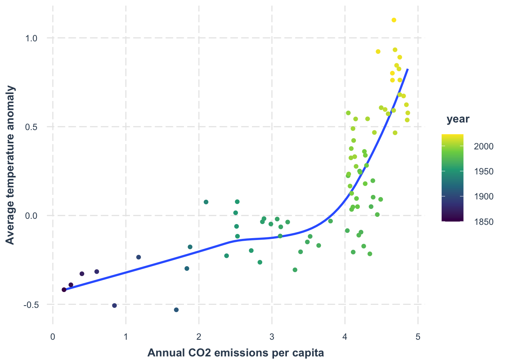

library(tidyverse)
library(tidylog)9 Import and Join Data
Class Objectives
- How to create and use RStudio Projects
- How to import data from files
- How to join relational data
So far, we’ve only worked with data bundled inside packages. In real-world scenarios, however, data is often stored in external files—like Excel or CSV—and may be spread across multiple files. To get it all into one tidy tibble, we typically import the data first, then merge the datasets using the appropriate joining functions. Let’s begin by loading the packages we’ve been using all along:
9.1 File structure
The layout of your files and directories can be crucial for smooth data work. As someone who routinely run other people’s code, I can’t stress enough how important it is to adopt good file-management practices.

An excellent practice is to create an RStudio Project. This makes it easier to keep all your scripts, data, and output in one organized place and ensures file paths don’t become nightmares. See official Guideline
If you’re short on time and simply want to test a single script, you can open the R code file directly in RStudio. But remember, it’s best to use a Project in the long run.
9.2 Import data
The simplest way to import data in RStudio is to click Import Dataset, navigate to your file, and let RStudio generate the code for you. Here’s an example where we import a CSV containing per-capita CO₂ data, taken from Our World in Data:
read_csv("data/per-capita-co-emissions.csv")For cleaner column names, the janitor package offers a handy function called clean_names(). It converts column headers into lower-case words separated by underscores (among other things). Let’s see it in action:
# if you don't have the janitor package installed, you can install it with the following command
# pak::pkg_install("janitor")
read_csv("data/per-capita-co-emissions.csv") |>
janitor::clean_names()This often saves you time and frustration, especially when working with large or messy real-world datasets. It has been a time-saver for me on many occasions.
Additionally, we should rename() the columns to make them more readable.
data_co2 <- read_csv("data/per-capita-co-emissions.csv") |>
janitor::clean_names() |>
rename(
co2 = annual_co2_emissions_per_capita
)- 1
-
We use the
clean_names()function to make column names more readable. - 2
-
We use the
rename()function to rename the column. - 3
-
We rename the column
annual_co2_emissions_per_capitatoco2.
Rows: 94 Columns: 3
── Column specification ────────────────────────────────────────────────────────
Delimiter: ","
chr (1): Entity
dbl (2): Year, Annual CO₂ emissions (per capita)
ℹ Use `spec()` to retrieve the full column specification for this data.
ℹ Specify the column types or set `show_col_types = FALSE` to quiet this message.
rename: renamed one variable (co2)As always, let’s do a quick plot to sense-check our data:
data_co2 |>
ggplot(aes(x = year, y = co2)) +
geom_line() +
labs(
x = "Year",
y = "Annual CO2 emissions per capita"
) +
jtools::theme_nice()- 1
- We use a line plot to show the evolution of CO2 emissions over time.

We see emissions rising across the years, but the real question might be how CO₂ levels relate to global temperature. For that, we’ll need to import temperature data and then join both datasets together.
9.3 Join Relational Data
We can fetch temperature data—also from Our World in Data—and load it similarly:
data_temp <- read_csv("data/temperature-anomaly.csv") |>
janitor::clean_names() |>
select(year, global_average_temperature_anomaly_relative_to_1961_1990) |>
rename(temp_anomaly = global_average_temperature_anomaly_relative_to_1961_1990)
data_tempNow we have two data frames: data_co2 and data_temp. Both contain a year column, which we can use as the “key” for joining. The left_join() function retains all rows of the left data frame (data_co2 in this case) and matches where possible:
data_co2 |>
left_join(
data_temp,
by = "year"
) Notice that joins are asymmetric. Switching the order to left_join(data_temp, data_co2, by = "year") wouldn’t produce the same result. A left join always keeps every row from the left-hand dataset, filling missing matches from the right dataset with NA. I highly recommend to stick to left_join() for consistency (and also forces you to think about which dataset is your primary source of information). However, you can also use right_join(), inner_join(), or full_join() depending on your needs.

With our combined data, we can see how temperature anomaly compares to per-capita CO₂ emissions:
data_co2 |>
left_join(
data_temp,
by = "year"
) |>
drop_na() |>
ggplot(
aes(x = co2,
y = temp_anomaly)
) +
geom_smooth(se = FALSE) +
geom_point(aes(color = year)) +
scale_color_viridis_c() +
labs(
x = "Annual CO2 emissions per capita",
y = "Average temperature anomaly"
) +
jtools::theme_nice()left_join: added one column (temp_anomaly)
> rows only in data_co2 10
> rows only in data_temp (91)
> matched rows 84
> ====
> rows total 94
drop_na: removed 10 rows (11%), 84 rows remaining
`geom_smooth()` using method = 'loess' and formula = 'y ~ x'
Exercise
We will use the band_members dataset and band_instruments dataset to practice joining data. Take a look at the datasets first, and then check how the two ways of joining data give different results.
library(tidyverse)
band_members |>
left_join(
band_instruments,
by = "name"
)left_join: added one column (plays)
> rows only in band_members 1
> rows only in band_instruments (1)
> matched rows 2
> ===
> rows total 3band_instruments |>
left_join(
band_members,
by = "name"
)left_join: added one column (band)
> rows only in band_instruments 1
> rows only in band_members (1)
> matched rows 2
> ===
> rows total 3Notice that when we flip the order of the data frames in left_join(), the results change, because a left join always “favors” the data frame that comes first.